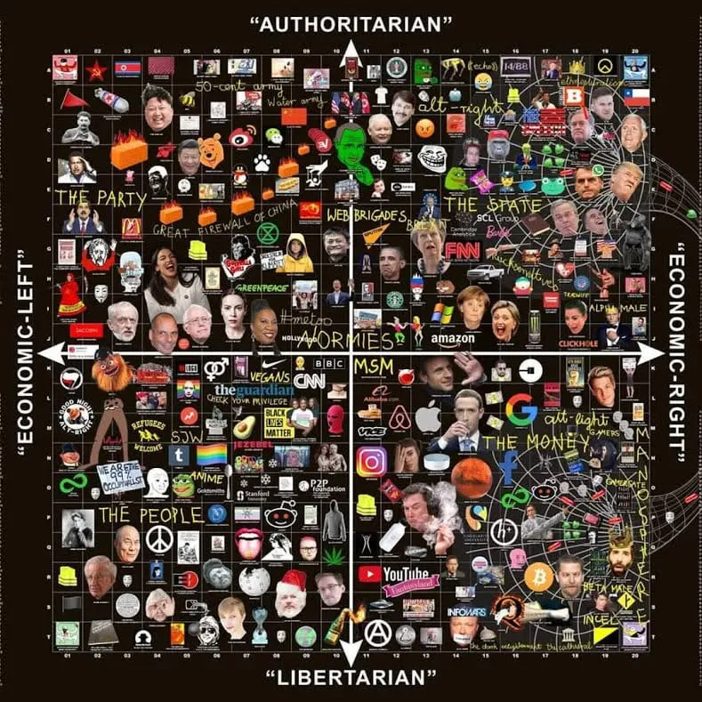
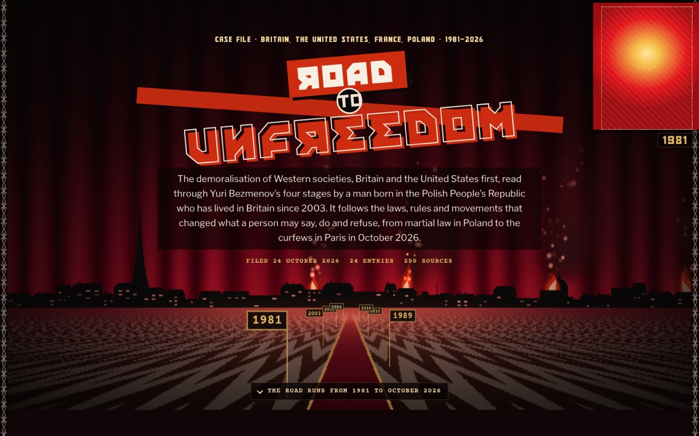
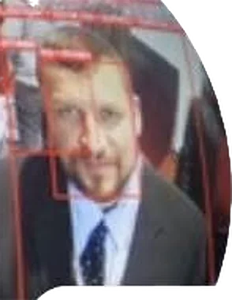

来自美国、英国和加拿大的约会网站与 Facebook 照片。成对比较 AUC .72；人类评分者 .55。
./verdict --subject=faces --target=political_orientation
斯坦福大学十年来的研究给出的答案是：在数百万张人脸的层面上存在微弱信号，落到任何一个人身上，结果接近抛硬币。


相关档案Road to Unfreedom英国、美国、法国和波兰，1981–2026：改变人们能说什么、做什么、拒绝什么的法律斯坦福大学商学院（Stanford GSB）的 Michal Kosinski（科辛斯基）训练人脸识别模型来区分自由派与保守派。在大样本中，模型的表现优于随机水平，说明人脸确实携带一定信息。一旦控制表情、姿态和外貌修饰，这部分信息只能解释人与人之间约 5% 的差异。
Kosinski 将这些结果定位为隐私警示，而不是一种可用的工具。
来自美国、英国和加拿大的约会网站与 Facebook 照片。成对比较 AUC .72；人类评分者 .55。
实验室拍摄的照片：中性表情、头发后梳、不化妆。算法 r = .22，人类 r = .21。
真实政治人物的照片。相关系数仅为 r = .13。
约会网站图片。批评者发现，信号的很大一部分来自外貌修饰和拍摄角度。
将每项已发表的分数换算为对单个人的一次左/右判断，并假定左右两边人数相等。一个方块代表 2.5 个百分点；青色标记为抛硬币。
观测值为 60% 时的 95% 区间。少量照片既不能证明有效，也不能证明无效。
每个真实威胁对应被误标的无辜者人数，即使采用已发表的最佳准确率也是如此。精确率 0.024%。
根据人脸推断人格和性取向的研究呈现同样的模式：大样本中效应很小，而且大部分信号来自自我呈现。
用于广告和政治的用户画像依靠数字足迹：点赞、帖子和浏览记录。人脸用于身份识别和人口学属性估计。没有文献记录任何已部署的系统根据人脸定向投放政治广告。
有文献记录实际使用的人脸模型分类的是族裔，而不是政治倾向。已报道的案例大多涉及中国的安防监控厂商。

首席研究员 · Budots Media Philippines。安防、CCTV 与数字孪生项目。
credits --orchestration
研究工作流由 Claude Opus 5.5（Anthropic）编排：文献与 GitHub 调研、模拟、本网站。已邀请 Kimi 和 ChatGPT Codex 参与核查。
除带标签的条目外，每条资料均于 2026 年 10 月 24–25 日在线打开核对。概率数据来自项目模拟（experiments/sim_single_photo_limits.py）。含核实状态的完整列表：references/bibliography.md。
未找到针对新人群的同行评议重复研究（2020–2026），也未找到针对性取向的视觉语言模型测试。
数据。公开：上述 ICO、FTC 和 DCMS 文件。不公开：Kogan 的应用收集的个人档案（FTC 下令删除；ICO 销毁了查获的副本）以及 myPersonality 数据集（2018 年停止共享）。本项目只链接官方记录，不使用泄露的副本。